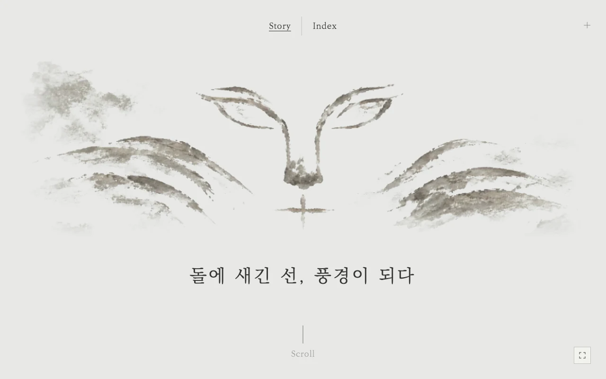
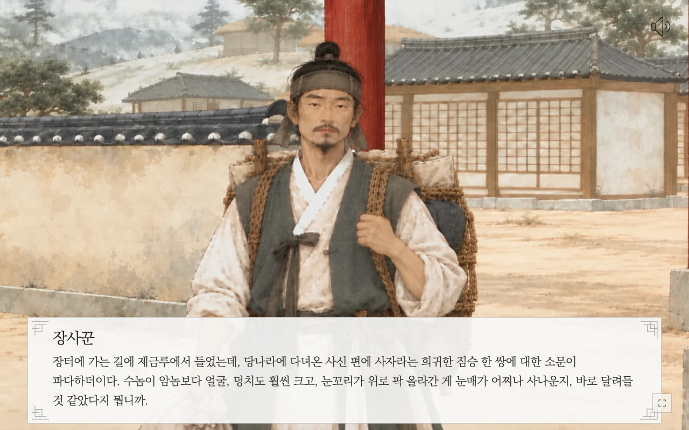

본문으로 건너뛰기
石
봉황동 석사자
기획과 제작으로
MAKING · UX/UI
UX/UI
Story

시작 화면 · 메뉴와 스크롤 안내

대사 화면 · 인물의 이야기와 음성
Index
전체 보기 · 두 석사자와 관찰 도구
부위 관찰 · 같은 부위를 나란히 비교
 전체 보기 · 두 석사자와 관찰 도구
전체 보기 · 두 석사자와 관찰 도구
 부위 관찰 · 같은 부위를 나란히 비교
부위 관찰 · 같은 부위를 나란히 비교